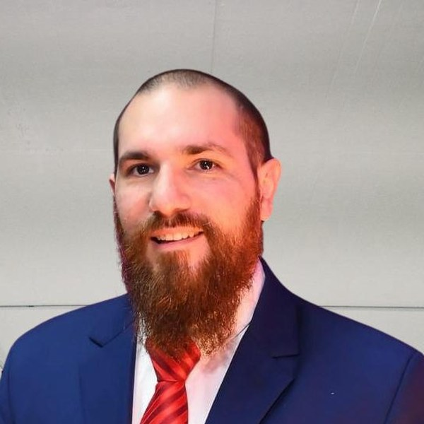

Ignacio Antuña
Soy un IT Manager orientado a resultados, con una base sólida en soporte técnico, liderazgo de equipos y operaciones estratégicas. Lidero equipos de alto rendimiento, gestiono la entrega de servicio e impulso mejoras de proceso de forma constante.
Empecé del lado más hands-on — armando computadoras, resolviendo tickets, aprendiendo HTML por curiosidad — y con los años eso se convirtió en mi forma de gestionar: entender el problema técnico de primera mano antes de delegarlo. Hoy en JPMorgan Chase, a cargo de las operaciones de Mac Support y de iniciativas de mejora continua.
Liderazgo & gestión
Sistemas operativos
Tecnologías & herramientas
Programación
Idiomas
- Españolnativo
- Inglés
- Italiano
- Ruso
- Lidero un equipo de especialistas que gestiona entornos macOS a nivel empresarial.
- Implemento soluciones estratégicas para simplificar el soporte y reducir el tiempo de resolución.
- Coordino esfuerzos multidisciplinarios para acompañar actualizaciones de sistemas y despliegues de hardware.
- Diseño y mantengo la documentación de los flujos de ITSM.
- Impulso métricas de desempeño y el cumplimiento de SLAs.
- Gestioné un equipo multidisciplinario de soporte técnico y servicios de IT internos.
- Supervisé el desempeño del equipo, definiendo KPIs y mentoreando a sus integrantes.
- Lideré la planificación estratégica de actualizaciones de sistemas y mejoras de servicio.
- Coordiné proyectos junto a RRHH, Finanzas y Producto.
- Entregué reportes a stakeholders y mejoré los procesos de reporting.
- Soporte de IT de punta a punta: infraestructura, redes y equipos de usuarios finales.
- Implementaciones de sistemas y mantenimiento de equipos críticos.
- Medidas proactivas que mejoraron el uptime y redujeron la tasa de incidentes.
- Soporte técnico en distintas sucursales y a usuarios VIP.
- Mantenimiento y configuración de hardware/software.
- Resolución de tickets multinivel y reparación de hardware.
"Trabajar con Ignacio hace que ningún día sea el mismo."
"Nacho es una persona creativa y muy ocurrente."
"Nacho es de esas personas con las que podés hablar sin parar de todo."
"Cuando se le encomienda una tarea, concentra todos sus esfuerzos en resolverla."
"Con Nacho siempre se aprenden cosas nuevas."
El Talar, Buenos Aires. Tengo vehículo propio, la movilidad no es problema.